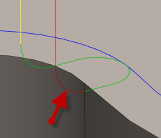

<div id="entry_verticalRadius"><p>垂直円弧の半径は、進入動作からツールパスまでを工具が移動する際の進入を円滑にします。</p>
<table class="tipTable" cellspacing="10">
<tr>
<td><center></center></td>
</tr><tr>
<td><center><p><b>垂直進入半径</b></p></center></td>
</tr></table>
</div>